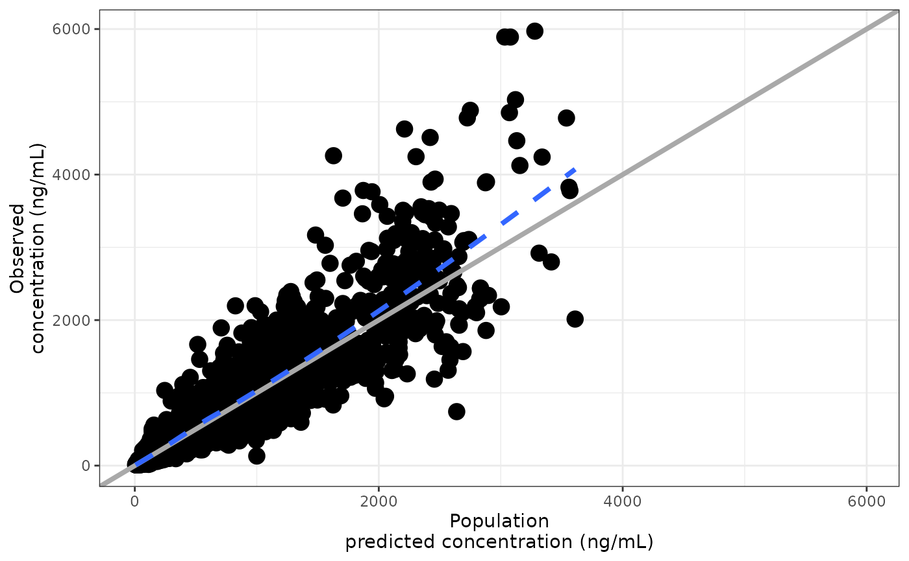

Inserts a single line break into one or more existing plot labels. By
default (names_from = "variable"), names in ... refer to data variables
mapped to aesthetics; the function locates the corresponding aesthetics and
breaks their labels. With names_from = "aes", names refer directly to
aesthetic names (x, y, colour, etc.). pm_gg_break_aes() is a
shorthand for pm_gg_break(..., names_from = "aes").
pm_gg_break(..., names_from = c("variable", "aes"))
pm_gg_break_aes(...)Arguments
- ...
name = valuepairs. Whennames_from = "variable"(the default), names are data variable names mapped to aesthetics in the plot; whennames_from = "aes", names are aesthetic names such asx,y, orcolour. In both cases, values are the character width passed aswidthtostr_break(): the label is broken at the last word boundary at or before that width.- names_from
whether names in
...identify data variable names ("variable", the default) or aesthetic names ("aes").
Value
A gg object that can be added to a ggplot with +. Works with
& when applied to a patchwork layout.
Functions
pm_gg_break_aes(): Shorthand forpm_gg_break(..., names_from = "aes"); names in...are aesthetic names (x,y,colour, etc.) rather than data variable names.
See also
Examples
data <- pmplots_data_obs()
p <- dv_pred(data) +
ggplot2::labs(
x = "Population predicted concentration (ng/mL)",
y = "Observed concentration (ng/mL)"
)
# Break by variable name (default)
p + pm_gg_break(PRED = 20, DV = 20)
#> `geom_smooth()` using formula = 'y ~ x'
#> `geom_smooth()` using formula = 'y ~ x'
 # Equivalent using aesthetic names directly
p + pm_gg_break_aes(x = 20, y = 20)
#> `geom_smooth()` using formula = 'y ~ x'
#> `geom_smooth()` using formula = 'y ~ x'
# Equivalent using aesthetic names directly
p + pm_gg_break_aes(x = 20, y = 20)
#> `geom_smooth()` using formula = 'y ~ x'
#> `geom_smooth()` using formula = 'y ~ x'
